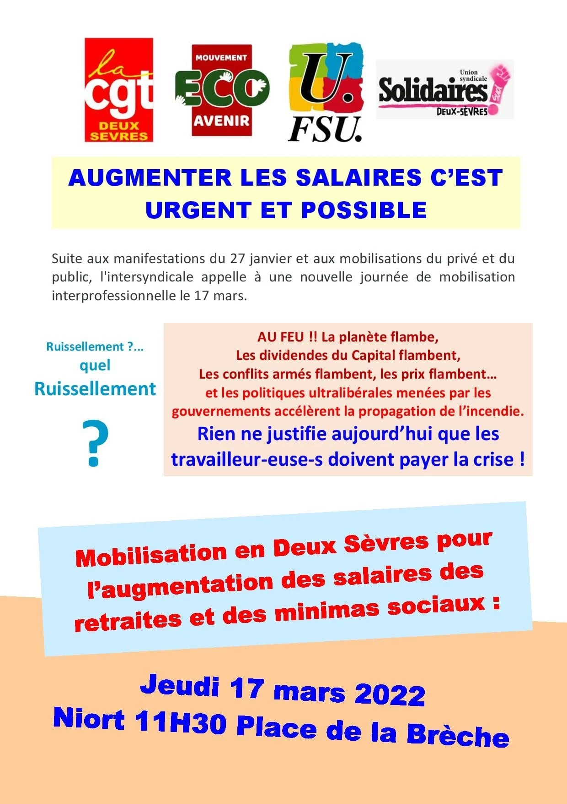

Appel relayé
Les salaires et les pensions au cœur de la mobilisation du 17 mars
Date indiquée par Facebook · 15 mars 2022
Repères éditoriaux
L’affiche intersyndicale annonce la mobilisation du 17 mars 2022 à Niort. Le rendez-vous est indiqué place de la Brèche.
Texte conservé avec la publication
Mobilisation en Deux-Sèvres pour l'augmentation des salaires, des retraites et des minimas sociaux.
Jeudi 17 mats 2022 à 11h30 Place de la Brèche à Niort.

Sources
Archive rouge · export Facebook · AR-0002-FB-01926
À lire aussi · À Parthenay, solidarité avec les militants convoqués à la gendarmerie · Le lien d’origine